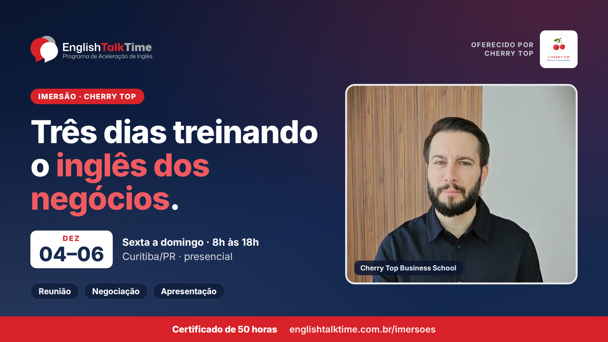
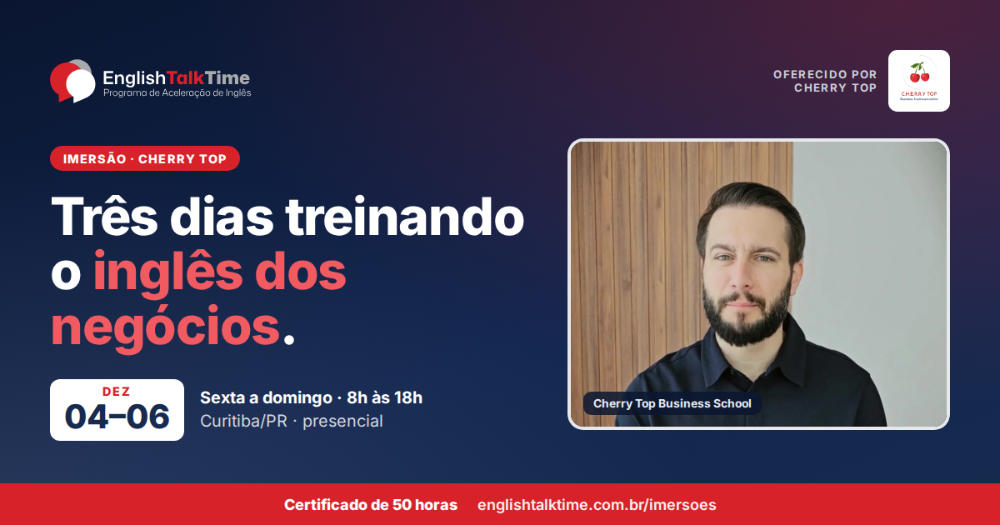
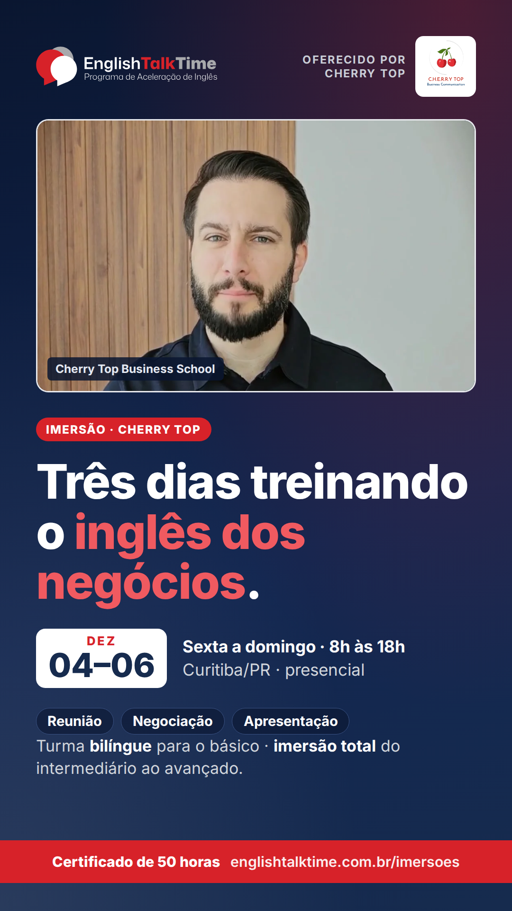

Três dias presenciais em Curitiba treinando o inglês dos negócios: reunião, negociação,
apresentação, business plan e cases em equipe, com apresentação final e feedback. Oferecido
pela Cherry Top, parceira do ETT. Aqui estão as artes, os textos por rede e o e-mail.
Quando: 04 a 06/12/2026, sexta a domingo, 8h às 18h
Níveis: turma bilíngue (básico) · imersão total (intermediário ao avançado)
Investimento: definido pela Cherry Top
01Links oficiais
A página do curso é o link que se cola nas redes: no LinkedIn e no WhatsApp ela aparece
com a arte. O formulário é onde a pessoa deixa o interesse (o ETT encaminha à Cherry Top).
Não cole o link deste kit nas redes: ele é noindex e não gera prévia.
Antes de postar: o local em Curitiba ainda não foi confirmado, por isso nenhum texto
traz endereço. As hashtags são sugestão: #EnglishTalkTime ainda não foi confirmada
como oficial. Preço não entra no material: quem informa é a Cherry Top.
02Artes
Identidade nova do ETT, com a logo da Cherry Top como quem oferece. A foto é um quadro dos
vídeos da própria Cherry Top. A prévia 1200×630 é a mesma que aparece quando alguém
compartilha a página do curso.

Banner 16:91920×1080 · capa de post, LinkedIn
Baixar PNGWebP

Prévia de link1200×630 · é a prévia da página do curso
Baixar PNG
Feed 4:51080×1350 · maior alcance no Instagram
Baixar PNG

Story 9:161080×1920 · stories e status do WhatsApp
Baixar PNG
03Textos prontos
Só fatos: datas, horário, carga horária, níveis e certificado. Sem preço, sem "últimas vagas" e
sem promessa de resultado. O curso aparece sempre como da Cherry Top.
LinkedIninstitucional · o link da página gera a prévia com a arte
🍒 De 4 a 6 de dezembro, em Curitiba: Cherry Top Business School, três dias treinando o inglês dos negócios.
Muita gente estudou inglês por anos e trava quando alguém pergunta "So, what do you think?" numa reunião. A proposta da Cherry Top, parceira do ETT nas imersões, é treinar justamente essas situações: reunião, negociação e apresentação, com business plan, case studies e trabalho em equipe. No último dia, cada participante apresenta o seu projeto e recebe feedback na hora.
Não precisa ser fluente: quem está no básico tem turma bilíngue, e do intermediário ao avançado é imersão total em inglês. São 3 dias presenciais, das 8h às 18h, mais pré-imersão online e estudo orientado, com certificado de 50 horas emitido pela Cherry Top.
O curso é oferecido pela Cherry Top, que define investimento e inscrição. O ETT divulga e encaminha quem tiver interesse.
Detalhes: https://englishtalktime.com.br/imersoes/business-school/
#EnglishTalkTime #CherryTop #businessenglish #inglesdenegocios #Curitiba
Instagramfeed · link na bio
🍒 Gramática você tem. Falta treinar o inglês dos negócios.
Cherry Top Business School: três dias em Curitiba vivendo situações reais de empresa, como reunião, negociação, apresentação, business plan e cases em equipe. No último dia, você apresenta o seu projeto e recebe feedback.
📅 4 a 6 de dezembro, sexta a domingo, das 8h às 18h
📍 Curitiba/PR, presencial
🎓 Certificado de 50 horas, emitido pela Cherry Top
🗣️ Turma bilíngue para o básico · imersão total do intermediário ao avançado
Oferecido pela Cherry Top, parceira do ETT. Detalhes pelo link na bio.
.
.
#EnglishTalkTime #CherryTop #businessenglish #inglesdenegocios #inglesparatrabalho #Curitiba #imersaoemingles
WhatsApp / Telegramencaminhável
🍒 *Cherry Top Business School: 4 a 6/dez, em Curitiba*
Três dias presenciais (8h às 18h) treinando inglês de negócios: reunião, negociação e apresentação. Turma bilíngue para o básico e imersão total do intermediário ao avançado. Certificado de 50h. Oferecido pela Cherry Top, parceira do ETT.
Detalhes: https://englishtalktime.com.br/imersoes/business-school/
X / Twitter261 caracteres (URL conta 23)
🍒 4 a 6/dez, em Curitiba: Cherry Top Business School, 3 dias treinando inglês de negócios (reunião, negociação, apresentação). Turma bilíngue para o básico, imersão total do intermediário ao avançado. Certificado de 50h. https://englishtalktime.com.br/imersoes/business-school/ #EnglishTalkTime
Repost1ª pessoa · Cherry Top, equipe e participantes
Em dezembro tem Cherry Top Business School em Curitiba: três dias, de 4 a 6/12, treinando o inglês das reuniões, das negociações e das apresentações. E tem turma bilíngue para quem está começando.
Se você trava na hora de falar inglês no trabalho, vale dar uma olhada: https://englishtalktime.com.br/imersoes/business-school/
04Vídeos da Cherry Top
Os 3 reels do curso, em versão leve, para repostar nos stories ou no status do WhatsApp.
Abra email.html, use “ver código-fonte”, copie tudo e
cole em RD Station → E-mails → Criar e-mail → Código HTML. Sugestões de assunto no
comentário do topo do arquivo. O descadastro é inserido pela RD: não duplique.
Pra quem mandar: a base da RD (quem pediu informações sobre o ETT). O botão leva à página
do curso, e de lá ao formulário de interesse, que o ETT encaminha à Cherry Top.